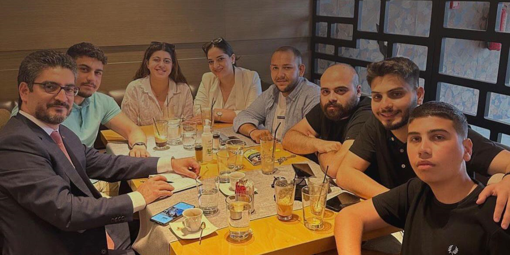
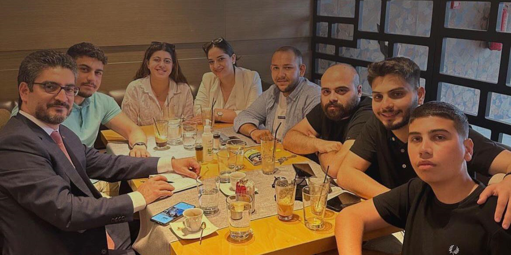

Αγαπητές συμφοιτήτριες, αγαπητοί συμφοιτητές,
Με αισθήματα χαράς, απευθύνω θερμό καλωσόρισμα στη κυπριακή φοιτητική οικογένεια. Η εισδοχή σας στο Δημοκρίτειο Πανεπιστήμιο Θράκης δεν μόνο μια προσωπική επιτυχία, αλλά και το πρώτο βήμα σε μια διαδρομή πνευματικής και κοινωνικής καλλιέργειας – μια πορεία που, όπως εύστοχα περιγράφει ο Καβάφης, είναι γεμάτη σταθμούς, εμπειρίες και γνώση, που θα διαμορφώσουν την προσωπική σας Ιθάκη.
Με την ευκαιρία αυτή, σας προσκαλούμε να περιηγηθείτε στο ιστολόγιο της Φοιτητικής Ενώσεως που δημιουργήθηκε και τέθηκε σε λειτουργία κατά το ακαδημαϊκό έτος 2023-2024 με πρωτοβουλίες του τότε Διοικητικού Συμβουλίου.
Πρόκειται για μια πρωτοβουλία που γεννήθηκε από την ανάγκη για ανανέωση και επικοινωνία, και υλοποιήθηκε χάρη στη συνεργασία του Συλλόγου με μια ομάδα εξαίρετων φοιτητριών του Τμήματος Πληροφορικής του Πανεπιστημίου Κύπρου.
Την ομάδα αποτελούν οι, Χαραλάμπους Μέλανη, Αλεξάνδρου Έλενα, Δημητρίου Δήμητρα, Ζυμαρά Στυλιάνα, Λοΐζου Αντωνία και Χατζημύλου Μαρίνα και τις ευχαριστούμε θερμά για τη συνεισφορά τους.
Το ιστολόγιο φιλοδοξεί να λειτουργήσει ως κόμβος ενημέρωσης, συμμετοχής και έκφρασης, ενισχύοντας τη σύνδεση μεταξύ των φοιτητών και του Συλλόγου. Είναι ένα βήμα σε μια συνεχή προσπάθεια εναρμόνισης της φοιτητικής δράσης με τις τεχνολογικές εξελίξεις και τις σύγχρονες ανάγκες.
Ως Διοικητικό Συμβούλιο, δεσμευόμαστε να συνεχίσουμε με υπευθυνότητα το έργο μας, με γνώμονα το συλλογικό συμφέρον και τον σεβασμό στις αρχές και τις αξίες που μας διέπουν. Η αποστολή μας δεν είναι να επιδιώκουμε την επιδοκιμασία, αλλά να υπηρετούμε με συνέπεια, διαύγεια και ωφελιμότητα την κοινότητά μας.
Με εκτίμηση,
Ανδρέας Αντωνίου
Πρόεδρος Διοικητικού Συμβουλίου
 
